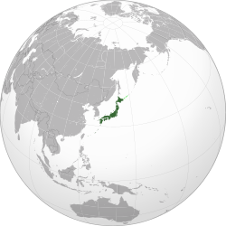

🏮 Cultura
Uma mistura única de tradições milenares (como a cerimônia do chá e o teatro Kabuki) com a modernidade tecnológica e a cultura Pop (Anime e Mangá).


O Japão é um arquipélago no Oceano Pacífico com cidades densas, palácios imperiais, parques nacionais montanhosos e milhares de santuários e templos.
Uma mistura única de tradições milenares (como a cerimônia do chá e o teatro Kabuki) com a modernidade tecnológica e a cultura Pop (Anime e Mangá).
Muito além do Sushi! A culinária japonesa inclui
O Japão possui mais de 5 milhões de máquinas de venda automática (vending machines) que vendem desde café quente até guarda-chuvas!